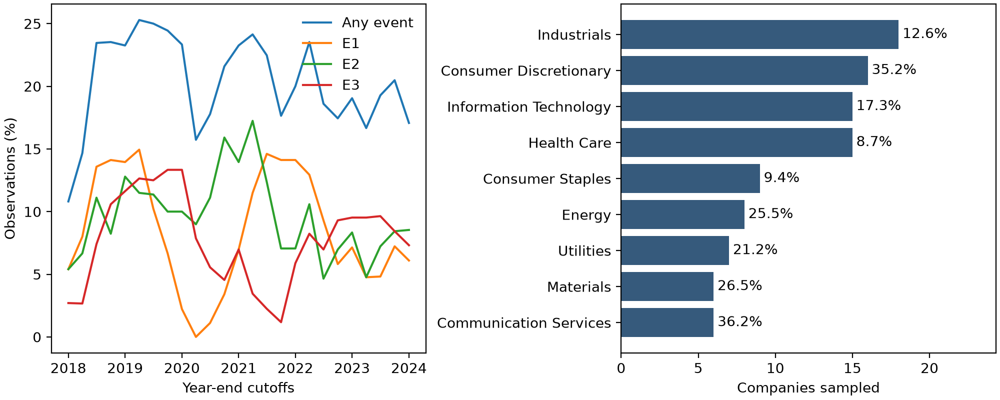

Explore historical financial distress and watch specialist agents debate the evidence available at a selected cutoff.
Listen as four analysts debate the company’s SEC financials, cast their votes, and hand the final decision to a moderator.
Loading study…

The scored AI experiment used financial numbers. The effect of adding human analyst commentary has yet to be tested.